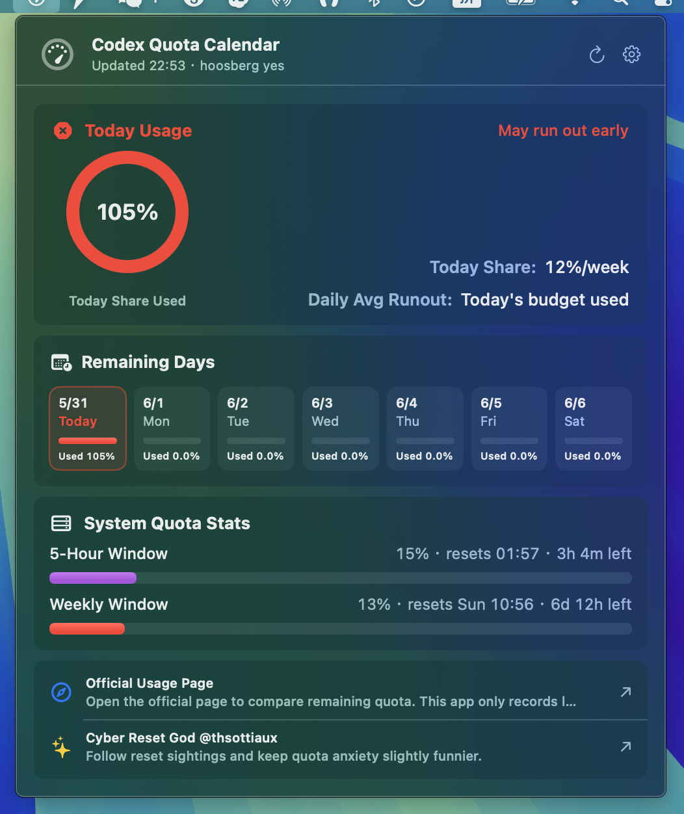
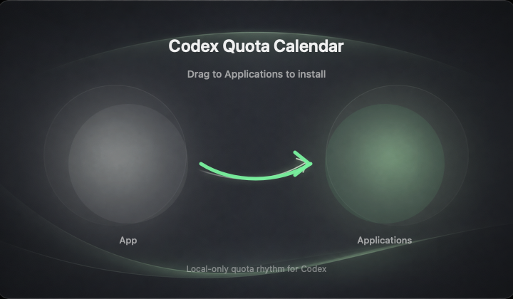

今日份额
用简单圆环显示今天平均份额已使用多少，并在接近尾声时给出更清晰的状态。
一个安静的 macOS 菜单栏工具，把每周剩余额度转换成每日份额、本周可用日、速度预估和本地历史。
不用再盯着抽象百分比猜今天还能用多久，打开菜单栏就能看到当前节奏。
Developer ID 签名 · Apple 公证 · 本地优先 · 非 OpenAI 官方产品

为什么有用
原始百分比很难判断节奏。Codex Quota Calendar 会把剩余周额度拆成每日平均份额，让你更容易决定今天该不该放慢速度。
用简单圆环显示今天平均份额已使用多少，并在接近尾声时给出更清晰的状态。
未来日期保持简单，未使用的天显示 0，今天显示真实消耗比例。
基于最近本地记录点做加权平均，让预计用完时间不再频繁跳动。
使用 SwiftUI 构建的 macOS 菜单栏小工具，不是网页套壳。
隐私
授权信息保存在这台 Mac 上。应用不运行开发者服务器，不发送分析统计，也不会上传你的使用历史。本地历史记录有大小限制，只用于估算速度。

开源
仓库包含 macOS 应用源码、单元测试、图标生成、DMG 样式、签名和公证脚本。密钥和本地发布凭据默认被排除。
swift test
./script/build_and_run.sh
./script/package_release.sh --notarize